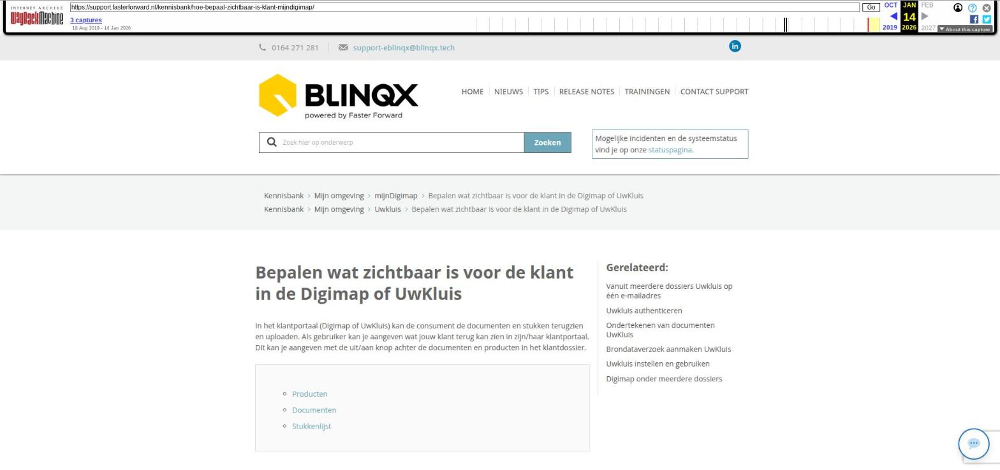

Bepalen wat zichtbaar is voor de klant in de Digimap of UwKluis

Tekstinhoud
Bepalen wat zichtbaar is voor de klant in de Digimap of UwKluis
In het klantportaal (Digimap of UwKluis) kan de consument de documenten en stukken terugzien en uploaden. Als gebruiker kan je aangeven wat jouw klant terug kan zien in zijn/haar klantportaal. Dit kan je aangeven met de uit/aan knop achter de documenten en producten in het klantdossier.
Producten
Documenten
Stukkenlijst
Producten
Op de startpagina in een klantdossier staan onderin de producten. Voor het wel of niet tonen van het product in het klantportaal kan je hier de producten ‘aan’ of ‘uit’ zetten door middel van het ‘aan/uit-icoon’. Het kan per product ingesteld worden. Is het icoon oranje dan is het product zichtbaar, is het icoon grijs dan is het product niet zichtbaar.
Ook bepaalt het aan- of uitzetten van producten of je de gekoppelde documenten aan het product kunt zien in het klantportaal. Indien het product op niet-publiek staat dan zie je ook de gekoppelde documenten niet in het portaal (ongeacht of het gekoppelde document op publiek of niet publiek staat). Dit geldt voor Uwkluis, niet voor de Digimap.
Documenten
In het tabblad ‘Documenten’ in het klantdossier geef je per document aan wat jouw klant wel/niet mag zien door deze ‘uit’ of ‘aan’ te zetten door middel van het ‘aan-uiticoon’.
Let op: Indien je ervoor kiest om een product in het geheel uit te zetten worden de documenten die aan dit product gekoppeld staan niet getoond, ook al heb je bij het tabblad ‘Documenten’ deze “aan” gezet. Let op dit geldt alleen voor Uwkluis, niet voor de Digimap.
Al bovenstaande geldt ook voor de documenten die onder een schademelding staan te vinden onder het tabblad Schademelding – Documenten.
Via Soort documenten beheer kan je aangeven of het soort document standaard op publiek moet komen te staan. Je zoekt hier het betreffende document op en klikt op het wijzigingsicoon. Via de checkbox achter ‘Standaard publiek bij toevoegen’ geef je aan of het document wel of niet automatisch op publiek gezet moet worden.
Stukkenlijst
De stukkenlijst wordt getoond in Uwkluis of de Digimap. Hier zitten wel wat voorwaarden aan vast. Voor de Digimap geldt dat de stukken aangeleverd moeten worden door de klant. Dit ‘aanleveren door’ stel je in in Soort documenten beheer. Als hier bijvoorbeeld maatschappij staat, dan komt het stuk niet zichtbaar in de Digimap.
Ook voor het tonen van stukken in Uwkluis zijn verschillende voorwaarden van toepassing, namelijk:
Het product waaraan de stukkenlijst is gekoppeld moet op publiek staan om de stukkenlijst te zien in Uwkluis.
Het stuk/document moet een categorie/soort document hebben. Documenten zonder een categorie worden niet gesynchroniseerd naar Uwkluis
Aan te leveren door moet op Klant staan (zie hierboven)
Laatste update: 27 oktober 2025
Tagged: digimapklantmap
Was deze informatie nuttig?
Ja Nee
[Deze pagina staat zowel onder de subcategorie mijnDigimap als onder Uwkluis op de site.]